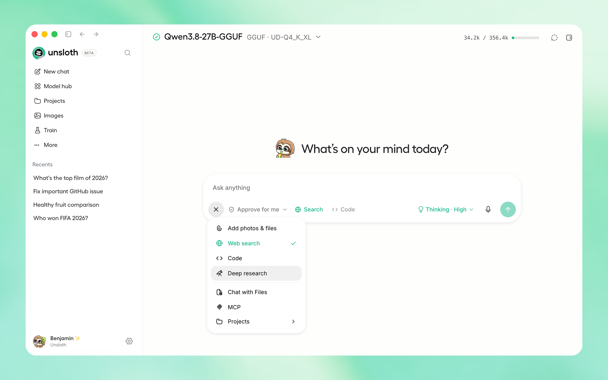
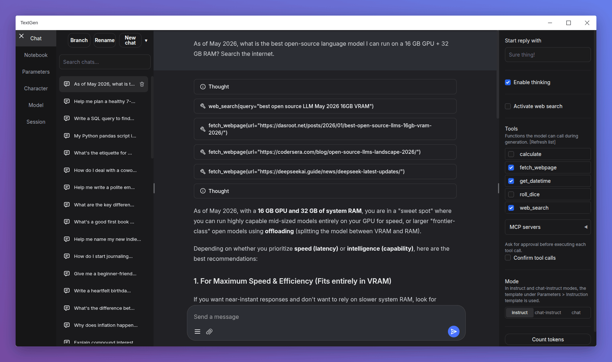

Motores (runtimes)
Ollama, llama.cpp, vLLM, GPT4All, LocalAI e afins.
11 links
| Vídeo | Projeto | O que faz | Pasta de origem | |
|---|---|---|---|---|
 Ollama: o que é e como configurar (primeiros pas Ollama: o que é e como configurar (primeiros pas |  | ollama/ollama | 186.8k★ · DeepSeek, Qwen e Gemma no seu PC com um comando. | curado — busca na internet |
 Como usar MTP no llama.cpp pra aumentar ABSURDAM Como usar MTP no llama.cpp pra aumentar ABSURDAM |  | ggml-org/llama.cpp | 134k★ · motor de inferência que roda até em notebook. | curado — busca na internet |
 Como Rodar IA na GPU com VLLM Como Rodar IA na GPU com VLLM | vllm-project/vllm | 96.8k★ · servidor de inferência rápido (o padrão em GPU). | curado — busca na internet | |
 How to Fine-Tune an AI Model Locally with Unslot How to Fine-Tune an AI Model Locally with Unslot |  | unslothai/unsloth | 79k★ · treina e roda LLM local (GGUF/MLX), 2× mais rápido. | curado — busca na internet |
| IA Grátis no seu PC | Ollama, LM Studio, GPT4All | nomic-ai/gpt4all | 77k★ · roda LLM local em qualquer máquina (app pronto). | curado — busca na internet | |
 LocalAI Tutorial - Run Any AI Model Locally (No LocalAI Tutorial - Run Any AI Model Locally (No |  | mudler/LocalAI | 50k★ · engine local para LLM, visão, voz e imagem. | curado — busca na internet |
| Tutorial - Rode QUALQUER LLM com TextGen WebUI |  | oobabooga/textgen | 47.7k★ · app desktop local para LLM (texto, visão, ferramentas). | curado — busca na internet |
| ✅TURISTA PORTUGUÊS VIRALIZA AO NARRAR ASSALTO NO |  | janhq/jan | 45.7k★ · alternativa ao ChatGPT que roda sem internet. | curado — busca na internet |
 DECOM IA + LLAMAFILE + MODEL QUANTIZADO GGUF = I DECOM IA + LLAMAFILE + MODEL QUANTIZADO GGUF = I | mozilla-ai/llamafile | 26.6k★ · modelo + motor num arquivo só, executa sem instalar nada. | curado — busca na internet | |
 KOBOLDCPP - Sua IA local simples e facil. KOBOLDCPP - Sua IA local simples e facil. | sem print | LostRuins/koboldcpp | 12.3k★ · roda GGUF com interface simples (o clássico do pessoal). | curado — busca na internet |
| Execute modelos de IA localmente com llama.cpp |  | withcatai/node-llama-cpp | 2.2k★ · llama.cpp com bindings para Node.js. | curado — busca na internet |